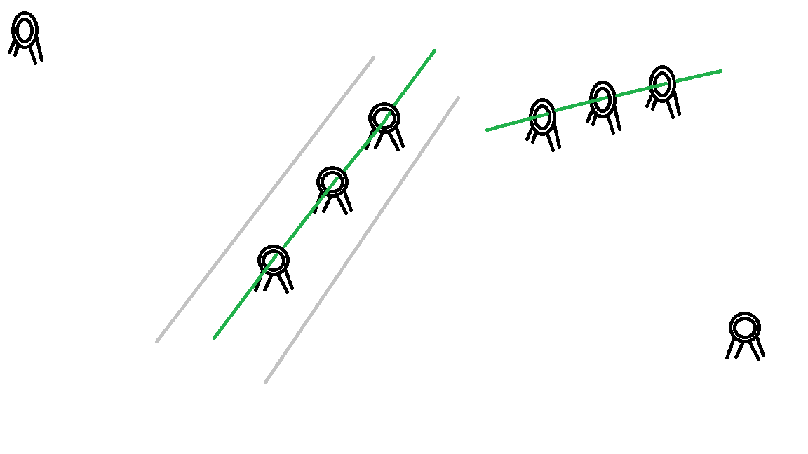
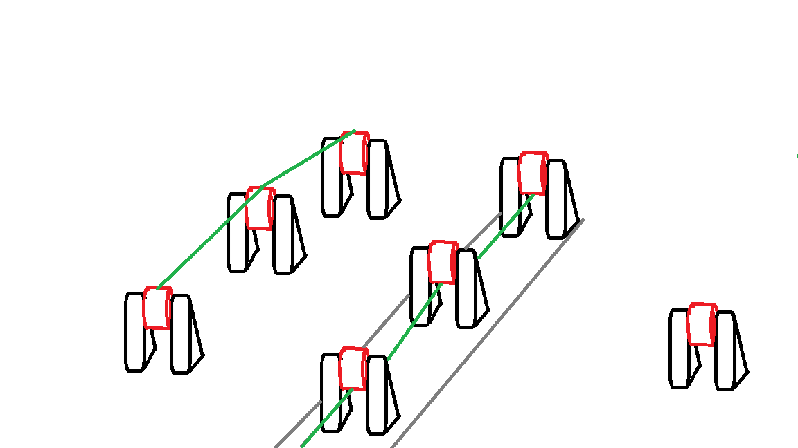
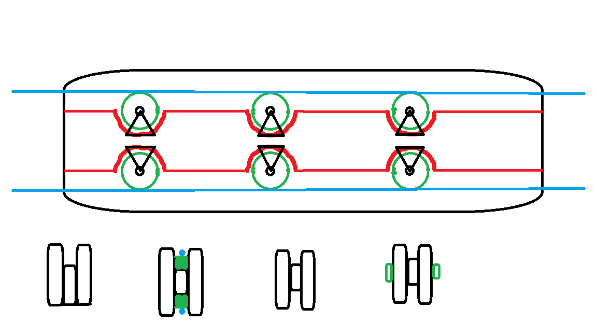
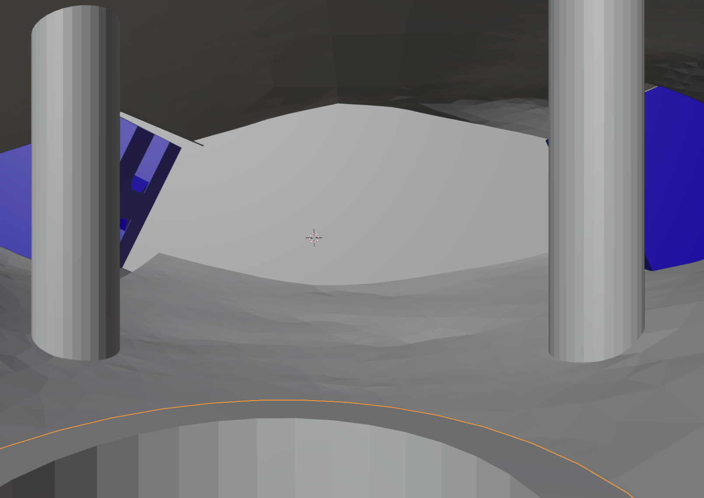

Behold the Pterodactyl
This was a group robotics project
An overview
This section describes the design and development process of an animatronic pterodactyl prototype. With the requirement of one articulating part in this case the wings flapping. This project was developed as part of a structured product development pipeline going from 2D designs to a virtual model and finally a physical manufactured model.
The focus of the project was not purely aesthetic but exploring a number of development techniques. The mechanical idea was inspired by ligaments for the actuation of the wings and a lightweight 3D printed structure.
The Concept
The initial design brief required an artifact with an articulating mechanism. After an initial idea discussion, a pterodactyl was chosen as the inspiration of the project with its wings being the articulating mechanism.
Initially a more complex pterodactyl model was proposed and explored this would have had much more movement. Having a state where the pterodactyl walks on its wings and another where the wings would lock and be able to flap. This was deemed as too ambitious for the constraints of the project. Although initial designs and mechanisms were designed as seen below.
After initial design and toning back the scale of the project. A more basic approach was developed where the pterodactyl would stay in the flying position and would flap its wings based on a ligament inspired pulley system. A motor (or manual input in the prototype) would apply force to the string connected to the upper wing which would raise it into the air. This was countered by an elastic string to restore it to the downward position and stop the wings from going limp when held in a flipped orientation.
As seen below are the early design iterations developed to contain the ligaments and allow them to operate:




Image 1: External loop guides (inspired by eyes on fishing rods) this approach used a set of raised rings extended out of the arm that would guide the tension lines. Although mechanically simple it was unsuitable for a 3D printed plastic model due to its fragility at the small scales.
Image 2: External roller guides this approach was similar to Image 1. Its more robust design fixed many of the issues show previously. However, due to wanting a continuous outer skin to wrap the wings this was not suitable. This is because it would interfere with the skin and must stab though it. Either cutting it or having large protrusions in the skin.
Image 3: To fix the issue with the previous design the roller system was moved internally. This allowed the roller system to work without interfering with the skin as it left the surface clear.
Image 4: The design of image 3 was chosen and was mirrored to allow both the raising line and the elastic tension line to be internal. This design was taken forward to the 3D prototyping stage.
Virtual Prototyping
Blender was chosen as the development tool for the project due to its combined strength for both organic sculpting and mechanical modelling workflows. Along with the available skillset within the group. This allowed for both the rigid structural components (joints and supports) and the more organic sections (head, body and legs) to be created in one application.
The image above can be controlled using scroll wheel to zoom, right click to pan and left click to rotate
The Design
The design makes use of print in place to create the join between the shoulder (blue) and the upper wing (white). This was needed as without print in place, the pin joining the two would have had to be an individual part secured after the print this way it’s on solid piece.
The shoulder(blue) is set into the body and does not move. The upper wing (white) rotates around the pin that bisects the shoulder as seen above. This motion will be controlled by ligaments (string or some kind of twine) along the top groove. The bottom groove will have an elasticated ligament to keep the arm in tension and return it down once realised. This prevents the arms from going loose in case model it is flipped upside down.
The design was composed of 3 main sections. The wing as shown below is made from a shoulder joint (blue) which sockets into the body and the upper wing (white) which rotates around a print in place pin connected to the shoulder. Using the internal channels the tensioned ligament on top would pull on the upper wing raising it. Once released the elastic ligament in the bottom channel would pull it back down when repeated this simulated flapping.
The decision to use print-in-place joint was critical in reducing assembly complexity. This is crucial if the prototype was taken into full production. As traditional pinned joints would require post-print assembly adding an extra step to the production pipeline and possible increasing failure points. By integrating the pivot directly into the print structural integrity and mechanical reliability is improved.
Design decisions of the body and internal structure
The internal structure of the model was designed to be both functional and manufacturable.
Key design features include:
The top half of the body is a hollowed internal cavity allowing the ligament system to route internally. This allowed for both the manual and future motorised actuation. Having all mechanics internally allows for maximum function while keeping a more realistic external appearance. The below image shows where the shoulders enter the cavity.

Internal pillars as shown in the above image were implemented to prevent internal snagging and maintain smooth curvature of tension lines. This improves the mechanical efficiency and reduces strain on the future motors and the human operators. Reducing overall wear giving the model a longer lifetime.
Integrated base socket gives a seamless connection between the base and the body. The hollow top of the base allows for the ligaments to be accessible from the base. Giving access for manual control systems. This was crucial for the manual operation.
The head and legs serve no functional use and are purely decorative so were designed as static structural elements. This allowed all focus to be on the mechanical system design without adding additional complexity.
Transition to a physical prototype
3D printing took the project from simulations and theory to a realised product. PETG was used as the print substance this was due to its relative ease to print with as opposed to others (ABS), its better impact and shatter resistance than PLA, strong temperature resistance and layer adhesion. Additionally, its strong chemical and UV resistance although useful were not deciding factors as the final product will be enclosed in a skin.
The initial prototype validated the choice for print in place joints, significantly reducing the assembly requirements. The structural rigidity was sufficient, and the weight remained low allowing for future motors to be cheaper and take less wear.

However, the internal rollers were incapable of spinning. As seen, I the above image one section of the shoulder printed poorly resulting a messy web. The prototype still functioned. This was due to being too small for the tolerance of the printer. This was mitigated by removing the rollers from the print leaving the bars they were set on. This allowed it to function without rollers. The final model’s rollers have a slice in them that allow the natural stretch of the material to be pried open and snap onto the pins.
Technologies
Several technologies where available for this project however not all were appropriate for this use case.
3D scanning was not used as we did not have access to a life like pterodactyl additionally it would not be useable for the mechanical wings. This would have required a physical prototype to 3d scan effectively making it redundant. While valuable in reverse engineering, its benefits are limited in biometric prototyping where the design is still experimental and not know.
Motion capture was also not used as a human mimicking the pterodactyl movement would not have been accurate enough without capturing bird’s movements this would introduce lots of ethical issues. Additionally, would require much greater complexity to mimic so would have been more difficult than a simple animation.
CAD software is typically superior in precision mechanical design. However, the blend of mechanical and organic modelling do not suit CAD as well. Because of this it would slow prototyping down once a final design was decided on the industrial production models mechanical parts would likely benefit from being made in CAD.
All 3D modelling and animation was done in the modelling software blender. This was due to the availability of knowledge within the group. Additionally, the mix of both mechanical and sculpted sections made blender the appropriate choice. As it has a variety of workflows unlike 3ds max which doesn’t have the sculpting abilities so would require multiple software’s to achieve the same goal.
Haptic input was not implemented as the initial goal was to wrap the model in a material, so the texture of the base model was not as important.
3D printing was used to bring the virtual prototype into a physical prototype. This step a crucial proof of concept. It changes the project from an idea to a something with real substance. 3D printing is an incredible prototyping tool being able to go from nothing to a model with such a short turn around and its relatively low costs, make is perfect for this type of use case. It is limited by available materials however for this use case it was appropriate.
Laser cutting was not used in this project due to not needing and metal or wooden parts by using 3D printing laser cutting was unnecessary. Additionally, the volumetric nature of the design was not suitable for laser cutting.
Composite works were considered by due to lack of availability difficulties with the budget and limited time frame were unfortunately not suitable. In the future a silicon skin over the body, head and legs would be added and a spandex stretchy material would be used as the wings. This would have greatly enhanced the project.
Reflection and future improvements
Through the iterative development process several improvements were identified. A significant limitation was the tolerance of the 3d printers when it came to small moving components such as the internal rollers. Although remedied by sperate printing a proper print in place solution would further reduce the assembly time.
Blender although highly effective during the development is not specifically made for precision mechanics. As such transitioning to CAD software for the final production mechanical parts would benefit consistency of the model. A hybrid workflow making use of CAD software for precision and keeping blender for sculpting would likely prove superior.
The project demonstrated the importance of understanding manufacturing constraints from the initial design stages. Several ideas where mechanically sound but were not feasible due to the additive manufacturing of 3D printing.
Future development would focus on:
Integrating a motor for autonomous operation.
Flexible skin and wing materials.
Refined tolerances for smoother articulation.
Overall, the project successfully demonstrated the full design production process from virtual processing, iterative design and additive manufacturing.
This is Something
Sed tristique purus vitae volutpat ultrices. Aliquam eu elit eget arcu commodo suscipit dolor nec nibh. Proin a ullamcorper elit, et sagittis turpis. Integer ut fermentum.
Also Something
Sed tristique purus vitae volutpat ultrices. Aliquam eu elit eget arcu commodo suscipit dolor nec nibh. Proin a ullamcorper elit, et sagittis turpis. Integer ut fermentum.
Probably Something
Sed tristique purus vitae volutpat ultrices. Aliquam eu elit eget arcu commodo suscipit dolor nec nibh. Proin a ullamcorper elit, et sagittis turpis. Integer ut fermentum.